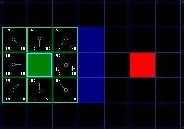

原文地址： A星算法详解.
A* 算法
概述
虽然掌握了 A* 算法的人认为它容易，但是对于初学者来说， A* 算法还是很复杂的。
搜索区域(The Search Area)
我们假设某人要从 A 点移动到 B 点，但是这两点之间被一堵墙隔开。如图 1 ，绿色是 A ，红色是 B ，中间蓝色是墙。

你应该注意到了，我们把要搜寻的区域划分成了正方形的格子。这是寻路的第一步，简化搜索区域，就像我们这里做的一样。这个特殊的方法把我们的搜索区域简化为了 2 维数组。数组的每一项代表一个格子，它的状态就是可走 (walkalbe) 和不可走 (unwalkable) 。通过计算出从 A 到 B需要走过哪些方格，就找到了路径。一旦路径找到了，人物便从一个方格的中心移动到另一个方格的中心，直至到达目的地。
方格的中心点我们成为“节点 (nodes) ”。如果你读过其他关于 A* 寻路算法的文章，你会发现人们常常都在讨论节点。为什么不直接描述为方格呢？因为我们有可能把搜索区域划为为其他多变形而不是正方形，例如可以是六边形，矩形，甚至可以是任意多变形。而节点可以放在任意多边形里面，可以放在多变形的中心，也可以放在多边形的边上。我们使用这个系统，因为它最简单。
开始搜索(Starting the Search)
一旦我们把搜寻区域简化为一组可以量化的节点后，就像上面做的一样，我们下一步要做的便是查找最短路径。在 A* 中，我们从起点开始，检查其相邻的方格，然后向四周扩展，直至找到目标。
我们这样开始我们的寻路旅途：
-
从起点 A 开始，并把它就加入到一个由方格组成的 open list( 开放列表 ) 中。这个 open list 有点像是一个购物单。当然现在 open list 里只有一项，它就是起点 A ，后面会慢慢加入更多的项。 Open list 里的格子是路径可能会是沿途经过的，也有可能不经过。基本上 open list 是一个待检查的方格列表。
-
查看与起点 A 相邻的方格 ( 忽略其中墙壁所占领的方格，河流所占领的方格及其他非法地形占领的方格 ) ，把其中可走的 (walkable) 或可到达的 (reachable) 方格也加入到 open list 中。把起点 A 设置为这些方格的父亲 (parent node 或 parent square) 。当我们在追踪路径时，这些父节点的内容是很重要的。稍后解释。
-
把 A 从 open list 中移除，加入到 close list( 封闭列表 ) 中， close list 中的每个方格都是现在不需要再关注的。
如下图所示，深绿色的方格为起点，它的外框是亮蓝色，表示该方格被加入到了 close list 。与它相邻的黑色方格是需要被检查的，他们的外框是亮绿色。每个黑方格都有一个灰色的指针指向他们的父节点，这里是起点 A 。

下一步，我们需要从 open list 中选一个与起点 A 相邻的方格，按下面描述的一样或多或少的重复前面的步骤。但是到底选择哪个方格好呢？具有最小 F 值的那个。
路径排序(Path Sorting)
计算出组成路径的方格的关键是下面这个等式：
F = G + H
这里，
G = 从起点 A 移动到指定方格的移动代价，沿着到达该方格而生成的路径。
H = 从指定的方格移动到终点 B 的估算成本。这个通常被称为试探法，有点让人混淆。为什么这么叫呢，因为这是个猜测。直到我们找到了路径我们才会知道真正的距离，因为途中有各种各样的东西 ( 比如墙壁，水等 ) 。本教程将教你一种计算 H 的方法，你也可以在网上找到其他方法。
我们的路径是这么产生的：反复遍历 open list ，选择 F 值最小的方格。这个过程稍后详细描述。我们还是先看看怎么去计算上面的等式。
如上所述， G 是从起点Ａ移动到指定方格的移动代价。在本例中，横向和纵向的移动代价为 10 ，对角线的移动代价为 14 。之所以使用这些数据，是因为实际的对角移动距离是 2 的平方根，或者是近似的 1.414 倍的横向或纵向移动代价。使用 10 和 14 就是为了简单起见。比例是对的，我们避免了开放和小数的计算。这并不是我们没有这个能力或是不喜欢数学。使用这些数字也可以使计算机更快。稍后你便会发现，如果不使用这些技巧，寻路算法将很慢。
既然我们是沿着到达指定方格的路径来计算 G 值，那么计算出该方格的 G 值的方法就是找出其父亲的 G 值，然后按父亲是直线方向还是斜线方向加上 10 或 14 。随着我们离开起点而得到更多的方格，这个方法会变得更加明朗。
有很多方法可以估算 H 值。这里我们使用 Manhattan 方法，计算从当前方格横向或纵向移动到达目标所经过的方格数，忽略对角移动，然后把总数乘以 10 。之所以叫做 Manhattan 方法，是因为这很像统计从一个地点到另一个地点所穿过的街区数，而你不能斜向穿过街区。重要的是，计算 H 是，要忽略路径中的障碍物。这是对剩余距离的估算值，而不是实际值，因此才称为试探法。
把 G 和 H 相加便得到 F 。我们第一步的结果如下图所示。每个方格都标上了 F ， G ， H 的值，就像起点右边的方格那样，左上角是 F ，左下角是 G ，右下角是 H 。

好，现在让我们看看其中的一些方格。在标有字母的方格， G = 10 。这是因为水平方向从起点到那里只有一个方格的距离。与起点直接相邻的上方，下方，左方的方格的 G 值都是 10 ，对角线的方格 G 值都是 14 。
H 值通过估算起点于终点 ( 红色方格 ) 的 Manhattan 距离得到，仅作横向和纵向移动，并且忽略沿途的墙壁。使用这种方式，起点右边的方格到终点有 3 个方格的距离，因此 H = 30 。这个方格上方的方格到终点有 4 个方格的距离 ( 注意只计算横向和纵向距离 ) ，因此 H = 40 。对于其他的方格，你可以用同样的方法知道 H 值是如何得来的。
每个方格的 F 值，再说一次，直接把 G 值和 H 值相加就可以了。
继续搜索(Continuing the Search)
为了继续搜索，我们从 open list 中选择 F 值最小的 ( 方格 ) 节点，然后对所选择的方格作如下操作：
-
把它从 open list 里取出，放到 close list 中。 -
检查所有与它相邻的方格，忽略其中在 close list 中或是不可走 (unwalkable) 的方格 ( 比如墙，水，或是其他非法地形 ) ，如果方格不在open lsit 中，则把它们加入到 open list 中。
把我们选定的方格设置为这些新加入的方格的父亲。
-
如果某个相邻的方格已经在 open list 中，则检查这条路径是否更优，也就是说经由当前方格 ( 我们选中的方格 ) 到达那个方格是否具有更小的 G 值。如果没有，不做任何操作。
相反，如果 G 值更小，则把那个方格的父亲设为当前方格 ( 我们选中的方格 ) ，然后重新计算那个方格的 F 值和 G 值。如果你还是很混淆，请参考下图。
Ok ，让我们看看它是怎么工作的。在我们最初的 9 个方格中，还有 8 个在 open list 中，起点被放入了 close list 中。在这些方格中，起点右边的格子的 F 值 40 最小，因此我们选择这个方格作为下一个要处理的方格。它的外框用蓝线打亮。
首先，我们把它从 open list 移到 close list 中 ( 这就是为什么用蓝线打亮的原因了 ) 。然后我们检查与它相邻的方格。它右边的方格是墙壁，我们忽略。它左边的方格是起点，在 close list 中，我们也忽略。其他 4 个相邻的方格均在 open list 中，我们需要检查经由这个方格到达那里的路径是否更好，使用 G 值来判定。让我们看看上面的方格。它现在的 G 值为 14 。如果我们经由当前方格到达那里， G 值将会为 20(其中 10 为到达当前方格的 G 值，此外还要加上从当前方格纵向移动到上面方格的 G 值 10) 。显然 20 比 14 大，因此这不是最优的路径。如果你看图你就会明白。直接从起点沿对角线移动到那个方格比先横向移动再纵向移动要好。
当把 4 个已经在 open list 中的相邻方格都检查后，没有发现经由当前方格的更好路径，因此我们不做任何改变。现在我们已经检查了当前方格的所有相邻的方格，并也对他们作了处理，是时候选择下一个待处理的方格了。
因此再次遍历我们的 open list ，现在它只有 7 个方格了，我们需要选择 F 值最小的那个。有趣的是，这次有两个方格的 F 值都 54 ，选哪个呢？没什么关系。从速度上考虑，选择最后加入 open list 的方格更快。这导致了在寻路过程中，当靠近目标时，优先使用新找到的方格的偏好。但是这并不重要。 ( 对相同数据的不同对待，导致两中版本的 A* 找到等长的不同路径 ) 。
我们选择起点右下方的方格，如下图所示。

这次，当我们检查相邻的方格时，我们发现它右边的方格是墙，忽略之。上面的也一样。
我们把墙下面的一格也忽略掉。为什么？因为如果不穿越墙角的话，你不能直接从当前方格移动到那个方格。你需要先往下走，然后再移动到那个方格，这样来绕过墙角。 ( 注意：穿越墙角的规则是可选的，依赖于你的节点是怎么放置的 )
这样还剩下 5 个相邻的方格。当前方格下面的 2 个方格还没有加入 open list ，所以把它们加入，同时把当前方格设为他们的父亲。在剩下的3 个方格中，有 2 个已经在 close list 中 ( 一个是起点，一个是当前方格上面的方格，外框被加亮的 ) ，我们忽略它们。最后一个方格，也就是当前方格左边的方格，我们检查经由当前方格到达那里是否具有更小的 G 值。没有。因此我们准备从 open list 中选择下一个待处理的方格。
不断重复这个过程，直到把终点也加入到了 open list 中，此时如下图所示。

注意，在起点下面 2 格的方格的父亲已经与前面不同了。之前它的 G 值是 28 并且指向它右上方的方格。现在它的 G 值为 20 ，并且指向它正上方的方格。这在寻路过程中的某处发生，使用新路径时 G 值经过检查并且变得更低，因此父节点被重新设置， G 和 F 值被重新计算。尽管这一变化在本例中并不重要，但是在很多场合中，这种变化会导致寻路结果的巨大变化。
那么我们怎么样去确定实际路径呢？很简单，从终点开始，按着箭头向父节点移动，这样你就被带回到了起点，这就是你的路径。如下图所示。从起点 A 移动到终点 B 就是简单从路径上的一个方格的中心移动到另一个方格的中心，直至目标。就是这么简单！

A算法总结(Summary of the A Method)
Ok ，现在你已经看完了整个的介绍，现在我们把所有步骤放在一起：
-
把起点加入 open list 。 -
重复如下过程：
a. 遍历 open list ，查找 F 值最小的节点，把它作为当前要处理的节点。
b. 把这个节点移到 close list 。
c. 对当前方格的 8 个相邻方格的每一个方格？
◆ 如果它是不可抵达的或者它在 close list 中，忽略它。否则，做如下操作。
◆ 如果它不在 open list 中，把它加入 open list ，并且把当前方格设置为它的父亲，记录该方格的 F ， G 和 H 值。
◆ 如果它已经在 open list 中，检查这条路径 ( 即经由当前方格到达它那里 ) 是否更好，用 G 值作参考。更小的 G 值表示这是更好的路径。如果是这样，把它的父亲设置为当前方格，并重新计算它的 G 和 F 值。如果你的 open list 是按 F 值排序的话，改变后你可能需要重新排序。
d. 停止，当你
◆ 把终点加入到了 open list 中，此时路径已经找到了，或者
◆ 查找终点失败，并且 open list 是空的，此时没有路径。
-
保存路径。从终点开始，每个方格沿着父节点移动直至起点，这就是你的路径。
题外话(Small Rant)
请原谅我的离题，当你在网上或论坛上看到各种关于 A* 算法的讨论时，你偶尔会发现一些 A* 的代码，实际上他们不是。要使用 A* ，你必须包含上面讨论的所有元素 ---- 尤其是 open list ， close list 和路径代价 G ， H 和 F 。也有很多其他的寻路算法，这些算法并不是 A* 算法， A* 被认为是最好的。在本文末尾引用的一些文章中 Bryan Stout 讨论了他们的一部分，包括他们的优缺点。在某些时候你可以二中择一，但你必须明白自己在做什么。 Ok ，不废话了。回到文章。
实现的注解(Notes on Implemetation)
现在你已经明白了基本方法，这里是你在写自己的程序是需要考虑的一些额外的东西。下面的材料引用了一些我用 C++ 和 Basic 写的程序，但是对其他语言同样有效。
-
维护 Open List ：这是 A* 中最重要的部分。每次你访问 Open list ，你都要找出具有最小 F 值的方格。有几种做法可以做到这个。你可以随意保存路径元素，当你需要找到具 有最小 F 值的方格时，遍历整个 open list 。这个很简单，但对于很长的路径会很慢。这个方法可以通过维护一个排好序的表来改进，每次当你需要找到具有最小 F 值的方格时，仅取出表的第一项即可。我写程序时，这是我用的第一个方法。
对于小地图，这可以很好的工作，但这不是最快的方案。追求速度的 A* 程序员使用了叫做二叉堆的东西，我的程序里也用了这个。以我的经验，这种方法在多数场合下会快 2—3 倍，对于更长的路径速度成几何级数增长 (10 倍甚至更快 ) 。如果你想更多的了解二叉堆，请阅读Using Binary Heaps in A* Pathfinding 。
-
其他单位：如果你碰巧很仔细的看了我的程序，你会注意到我完全忽略了其他单位。我的寻路者实际上可以互相穿越。这取决于游戏，也许可以，也许不可以。如果你想考虑其他单位，并想使他们移动时绕过彼此，我建议你的寻路程序忽略它们，再写一些新的程序来判断两个单位是否会发生碰撞。如果发生碰撞，你可以产生一个新的路径，或者是使用一些标准的运动法则（比如永远向右移动，等等）直至障碍物不在途中，然后产生一个新的路径。为什么在计算初始路径是不包括其他单位呢？因为其他单位是可以动的，当你到达的时候它们可能不在自己的位置上。这可以产生一些怪异的结果，一个单位突然转向来避免和一个已不存在的单位碰撞，在它的路径计算出来后和穿越它路径的那些单位碰撞了。
在寻路代码中忽略其他单位，意味着你必须写另一份代码来处理碰撞。这是游戏的细节，所以我把解决方案留给你。本文末尾引用的 Bryan Stout’s 的文章中的几种解决方案非常值得了解。
-
一些速度方面的提示：如果你在开发自己的 A* 程序或者是改编我写的程序，最后你会发现寻路占用了大量的 CPU 时间，尤其是当你有相当多的寻路者和一块很大的地图时。如果你阅读过网上的资料，你会发现就算是开发星际争霸，帝国时代的专家也是这样。如果你发现事情由于寻路而变慢了，这里有些主意很不错：
◆ 使用小地图或者更少的寻路者。
◆ 千万不要同时给多个寻路者寻路。取而代之的是把它们放入队列中，分散到几个游戏周期中。如果你的游戏以每秒 40 周期的速度运行，没人能察觉到。但是如果同时有大量的寻路者在寻路的话，他们会马上就发现游戏慢下来了。
◆ 考虑在地图中使用更大的方格。这减少了寻路时需要搜索的方格数量。如果你是有雄心的话，你可以设计多套寻路方案，根据路径的长度而使用在不同场合。这也是专业人士的做法，对长路径使用大方格，当你接近目标时使用小方格。如果你对这个有兴趣，请看 Two-Tiered A* Pathfinding 。
◆ 对于很长的路径，考虑使用路径点系统，或者可以预先计算路径并加入游戏中。
◆ 预先处理你的地图，指出哪些区域是不可到达的。这些区域称为“孤岛”。实际上，他们可以是岛屿，或者是被墙壁等包围而不可到达的任意区域。 A* 的下限是，你告诉他搜寻通往哪些区域的路径时，他会搜索整个地图，直到所有可以抵达的方格都通过 open list 或 close list 得到了处理。这会浪费大量的 CPU 时间。这可以通过预先设定不可到达的区域来解决。在某种数组中记录这些信息，在寻路前检查它。在我的 Blitz 版程序中，我写了个地图预处理程序来完成这个。它可以提前识别寻路算法会忽略的死路径，这又进一步提高了速度。
-
不同的地形损耗：在这个教程和我的程序中，地形只有 2 种：可抵达的和不可抵达 的。但是如果你有些可抵达的地形，移动代价会更高些，沼泽，山丘，地牢的楼梯
等都是可抵达的地形，但是移动代价比平地就要高。类似的，道路的移动代价就比 它周围的地形低。
在你计算给定方格的 G 值时加上地形的代价就很容易解决了这个问题。简单的给这些方格加上一些额外的代价就可以了。 A* 算法用来查找代价最低的路径，应该很容易处理这些。在我的简单例子中，地形只有可达和不可达两种， A* 会搜寻最短和最直接的路径。但是在有地形代价的环境中，代价最低的的路径可能会很长。
就像沿着公路绕过沼泽而不是直接穿越它。
另一个需要考虑的是专家所谓的“ influence Mapping ”，就像上面描述的可变成本地形一样，你可以创建一个额外的计分系统，把它应用到寻路的 AI 中。假设你有这样一张地图，地图上由个通道穿过山丘，有大批的寻路者要通过这个通道，电脑每次产生一个通过那个通道的路径都会变得很拥挤。如果需要，你可以产生一个 influence map ，它惩罚那些会发生大屠杀的方格。这会让电脑选择更安全的路径，也可以帮助它避免因为路径短（当然也更危险）而持续把队伍或寻路者送往某一特定路径。
-
维护未探测的区域：你玩 PC 游戏的时候是否发现电脑总是能精确的选择路径，甚至地图都未被探测。对于游戏来说，寻路过于精确反而不真实。幸运的是，这个问题很容易修正。答案就是为每个玩家和电脑（每个玩家，不是每个单位 — 那会浪费很多内存）创建一个独立的 knownWalkability 数组。每个数组包含了玩家已经探测的区域的信息，和假设是可到达的其他区域，直到被证实。使用这种方法，单位会在路的死端徘徊，并会做出错误的选择，直到在它周围找到了路径。地图一旦被探测了，寻路又向平常一样工作。
-
平滑路径： A* 自动给你花费最小的，最短的路径，但它不会自动给你最平滑的路径。看看我们的例子所找到的路径（图 7 ）。在这条路径上，第一步在起点的右下方，如果第一步在起点的正下方是不是路径会更平滑呢？
有几个方法解决这个问题。在你计算路径时，你可以惩罚那些改变方向的方格，把它的 G 值增加一个额外的开销。另一种选择是，你可以遍历你生成的路径，查找那些用相邻的方格替代会使路径更平滑的地方。要了解更多，请看 Toward More Realistic Pathfinding 。
-
非方形搜索区域：在我们的例子中，我们使用都是 2D 的方形的区域。你可以使用不规则的区域。想想冒险游戏中的那些国家，你可以设计一个像那样的寻路关卡。你需要建立一张表格来保存国家相邻关系，以及从一个国家移动到另一个国家的 G 值。你还需要一个方法了估算 H 值。其他的都可以向上面的例子一样处理。当你向 open list 添加新项时，不是使用相邻的方格，而是查看表里相邻的国家。
类似的，你可以为一张固定地形的地图的路径建立路径点系统。路径点通常是道路或地牢通道的转折点。作为游戏设计者，你可以预先设定路径点。如果两个路径点的连线没有障碍物的话它们被视为相邻的。在冒险游戏的例子中，你可以保存这些相邻信息在某种表中，当 open list 增加新项时使用。然后记录 G 值（可能用两个结点间的直线距离）和 H 值（可能使用从节点到目标的直线距离）。其它的都想往常一样处理。
进一步阅读(Further Reading)
Ok ，现在你已经对 A* 有了个基本的了解，同时也认识了一些高级的主题。我强烈建议你看看我的代码，压缩包里包含了 2 个版本的实现，一个是 C++ ，另一个是 Blitz Basic 。 2 个版本都有注释，你以该可以很容易就看懂。下面是链接：
Sample Code: A* Pathfinder (2D) Version 1.71 。
如果你不会使用 C++ 或是 BlitzBasic ，在 C++ 版本下你可以找到两个 exe 文件。 BlitzBasic 版本必须去网站 Blitz Basic 下载 BlitzBasic 3D 的免费 Demo 才能运行。 在这里 here 你可以看到一个 Ben O’Neill 的 A* 在线验证实例。
你应该阅读下面这几个站点的文章。在你读完本教程后你可以更容易理解他们。
Amit’s A* Pages ： Amit Patel 的这篇文章被广泛引用，但是如果你没有阅读本教程的话，你可能会感到很迷惑。尤其是你可以看到 Amit Patel自己的一些想法。
Smart Moves: Intelligent Path Finding ： Bryan Stout 的这篇需要去 Gamasutra.com 注册才能阅读。 Bryan 用 Delphi 写的程序帮助我学习了A* ，同时给了我一些我的程序中的一些灵感。他也阐述了 A* 的其他选择。
Terrain Analysis ： Dave Pottinger 一篇非常高阶的，有吸引力的文章。他是 Ensemble Studios 的一名专家。这个家伙调整了游戏帝国时代和王者时代。不要期望能够读懂这里的每一样东西，但是这是一篇能给你一些不错的主意的很有吸引力的文章。它讨论了包 mip-mapping ，
influence mapping ，和其他高阶 AI 寻路主题。他的 flood filling 给了我在处理死路径 ”dead ends” 和孤岛 ”island” 时的灵感。这包含在我的 Blitz版本的程序里。
下面的一些站点也值得去看看：
· aiGuru: Pathfinding(http://www.aiguru.com/pathfinding.htm)
· Game AI Resource: Pathfinding(http://www.gameai.com/pathfinding.html)
· GameDev.net: Pathfinding (http://www.gamedev.net/reference/list.asp?categoryid=18#94)
谢谢。
如果您喜欢此博客或发现它对您有用，则欢迎对此发表评论。 也欢迎您共享此博客，以便更多人可以参与。 如果博客中使用的图像侵犯了您的版权，请与作者联系以将其删除。 谢谢 ！